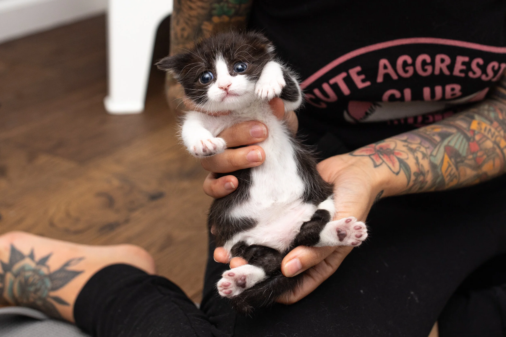
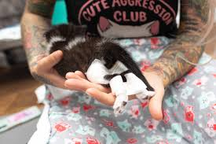
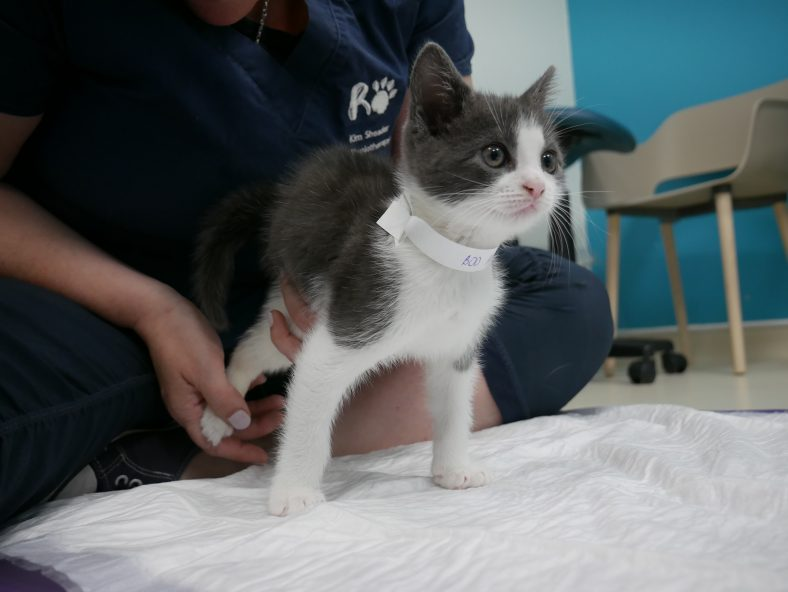
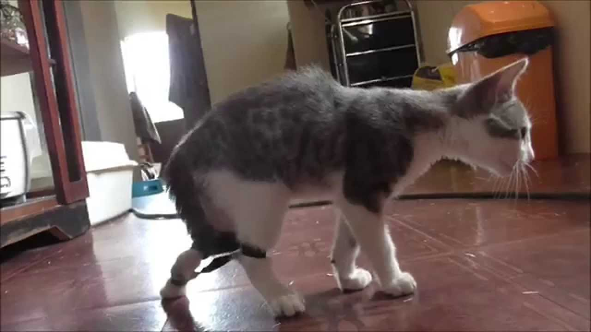

Steps:

with the help of someone, gently hold the cat and guide its legs under the body.

use a medical tape or bandage to hold the legs in the correct position

Do short, gentle leg exercises daily
